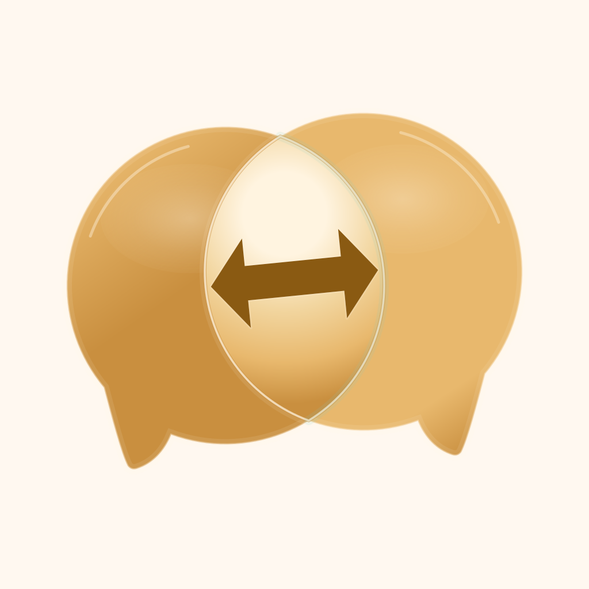
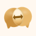
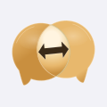
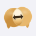
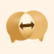
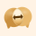
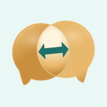

构图与气泡、透镜完全不变，只换底色和双向箭头颜色。箭头现在是实心填充（不再依赖“负空间露底色”），所以两个颜色可以独立调。四组底色都取自 App 的浅色语义色。

与 App 的 peerPane / 暖色卡片同族，整体最暖、最像“对话”；箭头明显是深琥珀而不是黑。

60和 App 浅色画布完全一致；冷暖对比最强，小尺寸最清楚。箭头偏深，但仍是暖棕，不是纯黑。

120
60比 Ivory 更杏、更暖；和面对面卡片的浅色底一致，整体很有“面对面”的场景感。

60
40琥珀 + 青的互补组合，最清爽、最有“实时传译”的科技感；但会引入第二个品牌色相。

180建议：1. Ivory 最贴合 App 的暖色品牌，箭头也最明显不是黑色；如果你更想“和浅色主画布完全一致”，选 2. Canvas；想要更清爽、更科技感，选 4. Mint。回 1/2/3/4 即可。